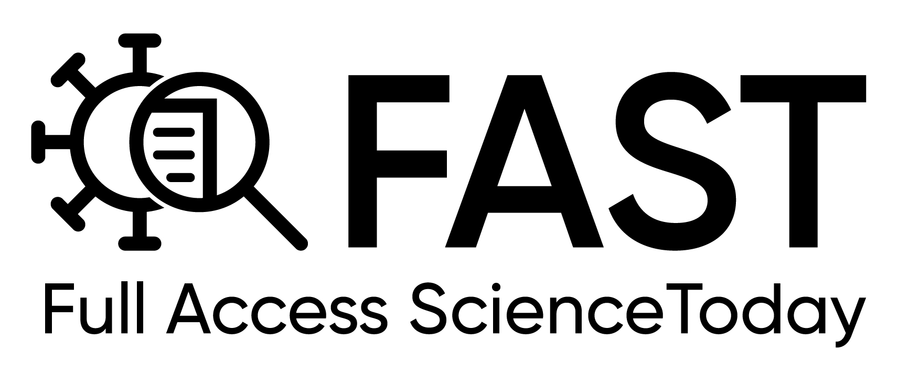

La théorie de la fuite du laboratoire de Wuhan
Jeremy Farrar, professeur à l'université d'Oxford, gros investisseur dans les entreprises de vaccins, membre du SAGE (The Scientific Advisory Group for Emergencies, UK)
et directeur du Wellcome Trust, deuxième après Bill Gates dans sa capacité à influencer les événements pendant la crise du COVID-19 et la campagne de vaccination,
admet dans son livre "Spike : The Virus vs. The People - the Inside Story" que, dès janvier 2020, les experts qu'il a consultés étaient sûrs à 80 % que le virus
(Sars-CoV2) provenait d'un laboratoire. Depuis lors, nous avons appris que l'Institut de virologie de Wuhan, ainsi que son collaborateur,
l'organisation à but non lucratif EcoHealth Alliance, basée aux États-Unis, se sont engagés dans ce que le gouvernement américain définit comme une
"recherche préoccupante sur le gain de fonction", c'est-à-dire qu'ils ont intentionnellement rendu des virus plus pathogènes ou transmissibles afin de les étudier,
malgré les stipulations d'une agence de financement américaine selon lesquelles l'argent ne devait pas être utilisé à cette fin
(Mercola, 2021;
Lerner & Hvistendahl, 2021).
Nous avons également appris que la subvention pour l'expérience controversée provenait de l'Institut national des allergies et des maladies infectieuses du National Institutes of Health, qui est dirigé par Anthony Fauci.
Articles scientifiques
De nouveaux détails émergent sur la recherche sur le coronavirus au laboratoire chinois.
New Details Emerge About Coronavirus Research at Chinese Lab.
https://theintercept.com/2021/09/06/new-details-emerge-about-coronavirus-research-at-chinese-lab/
Des documents des NIH fournissent de nouvelles preuves financées par les États-Unis dans la recherche sur le gain de functon à Wuhan.
NIH Documents Provide New Evidence U.S. Funded Gain-of-Functon Research in Wuhan.
https://theintercept.com/2021/09/09/covid-origins-gain-of-function-research/
Les responsables des NIH ont travaillé avec Ecohealth Alliance pour échapper aux restrictions sur les expériences de coronavirus.
NIH Officials Worked With Ecohealth Alliance to Evade Restrictions on Coronavirus Experiments.
https://theintercept.com/2021/11/03/coronavirus-research-ecohealth-nih-emails/
La montée soudaine de la théorie de la fuite du laboratoire de Coronavirus.
The Sudden Rise of the Coronavirus Lab-Leak Theory
https://www.newyorker.com/news/annals-of-inquiry/the-sudden-rise-of-the-coronavirus-lab-leak-theory?mbid=social_twitter&utm_social-type=owned&utm_medium=social&utm_source=twitter&utm_brand=tny
L'origine de Covid : Pourquoi la théorie de la fuite du laboratoire de Wuhan est prise au sérieux.
Covid origin: Why the Wuhan lab-leak theory is being taken seriously.
https://www.bbc.com/news/world-asia-china-57268111
L'article fondateur de l'Institut de virologie de Wuhan, qui affirme que le SRAS-CoV-2 est probablement originaire des chauves-souris, semble contenir un spécimen artificiel, un assemblage génomique incomplet et inexact, ainsi que la signature d'une biologie synthétique issue d'un laboratoire.
The seminal paper from the Wuhan Institute of Virology claiming SARS-CoV-2 probably originated in bats appears to contain a contrived specimen, an incomplete and inaccurate genomic assembly, and the signature of laboratory-derived synthetic biology.
https://zenodo.org/record/5778318
Preuve de l'existence de coronavirus (CoV) utilisant l'ACE2 et liés au CoV du syndrome respiratoire aigu sévère chez les chauves-souris.
Evidence for ACE2-Utilizing Coronaviruses (CoVs) Related to Severe Acute Respiratory Syndrome CoV in Bats.
https://journals.asm.org/doi/10.1128/JVI.00311-12